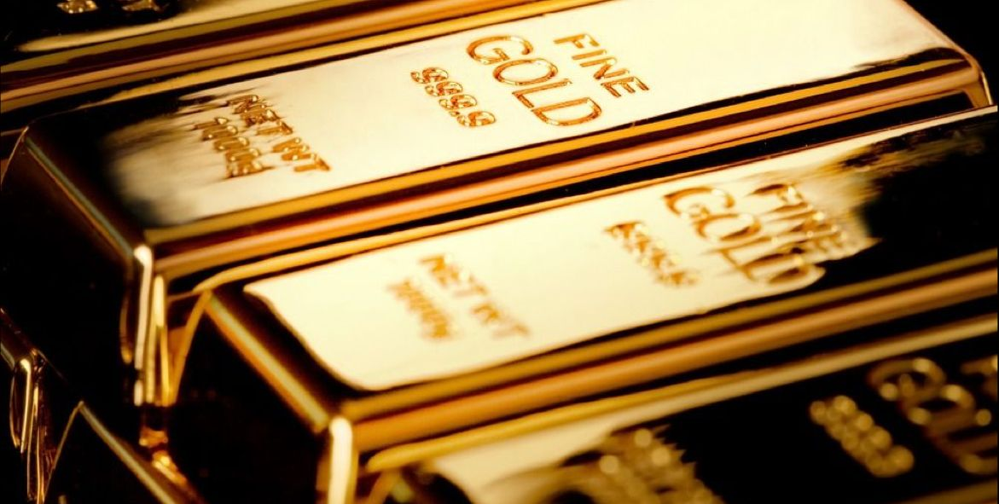

Harga emas mencapai level tertingginya dalam dua minggu pada perdagangan Rabu (Kamis waktuu Jakarta).
Harga emas melonjak usai penurunan imbal hasil Treasury Amerika Serikat (AS) setelah pernyataan dovish dari pejabat Bank Sentral AS, Federal Reserve (The Fed).
Sementara risalah dari pertemuan kebijakan terakhir bank sentral AS akan diperhatikan untuk mendapatkan isyarat lebih lanjut mengenai suku bunga.
Dikutip dari CNBC, harga emas dunia naik 0,73% pada USD 1,873.6082 per ounce, setelah mencapai level tertinggi sejak 29 September.
Sedangkan harga emas berjangka AS ditutup melonjak 0,6% ke level USD 1,887.3.
BACA JUGA
Analis Senior Kitco Metals, Jim Wyckoff mengatakan, komentar dovish dari pejabat Fed bahwa bank sentral AS mungkin menghentikan pengetatan dan gejolak di Timur Tengah mendukung pasar emas.
Presiden Fed Atlanta Raphael Bostic pada hari Selasa mengatakan dia tidak melihat kenaikan suku bunga AS lagi,
sementara Presiden Fed Minneapolis Neel Kashkari mengatakan kemungkinan imbal hasil obligasi yang lebih tinggi berarti The Fed dapat berbuat lebih sedikit.
Imbal hasil obligasi pemerintah AS bertenor 10 tahun turun untuk sesi kedua berturut-turut ke level terendah dalam dua minggu, semakin menjauh dari level tertinggi tahun 2007 yang dicapai pada minggu lalu.
Ketidakpastian mengenai arah perekonomian AS, potensi guncangan harga minyak, dan dampak pemogokan serikat pekerja, mendorong para pejabat Fed mengambil sikap hati-hati pada pertemuan mereka bulan lalu, menurut risalah sesi 19-20 September.
Harga Emas Sensitif Terhadap Suku Bunga AS
Harga emas sangat sensitif terhadap kenaikan suku bunga AS karena hal ini meningkatkan opportunity cost dalam memegang emas batangan.
Investor juga memantau perkembangan konflik antara Israel dan kelompok Islam Palestina Hamas. Pada hari Senin, harga naik 1,6% karena ketegangan geopolitik meningkatkan permintaan safe-haven.
Selain harga emas, harga perak di pasar spot juga naik 0,92% menjadi USD 22 per ounce. Harga platinum melonjak 0,77% menjadi USD 7.678 dan harga paladium turun 0,29% menjadi USD 1.166,9694.
Harga Emas Dunia Akhirnya Tergelincir di Tengah Perang Hamas Vs Israel

Harga emas tergelincir pada hari Selasa setelah naik hampir 2% di sesi sebelumnya. Penurunan harga emas dunia ini karena investor dengan hati-hati kembali ke aset-aset berisiko dan menantikan isyarat lebih lanjut mengenai sikap kebijakan bank sentral AS.
Dikutip dari CNBC, Rabu (11/10/2023), harga emas di pasar spot turun 0,07% menjadi USD 1,859,6244 per ounce pada 16:43, setelah naik ke level tertinggi lebih dari satu minggu di awal sesi.
Harga emas berjangka AS naik 0,5% menjadi USD 1,873.60 per ounce.
Menanti Kebijakan The Fed
Pasar fokus pada pertemuan kebijakan moneter Federal Reserve bulan September yang akan dipublikasikan pada hari Rabu dan data Indeks Harga Konsumen (CPI) AS yang akan dirilis pada hari Kamis.
"Jika laporan CPI lebih tinggi dari perkiraan, terutama angka inti, hal ini akan berdampak negatif bagi emas karena mengindikasikan bahwa The Fed harus mempertahankan suku bunga lebih tinggi lebih lama, tambah Melek.
Karena emas batangan tidak menghasilkan bunga, ia cenderung kehilangan daya tariknya ketika suku bunga naik.
Pejabat tinggi The Fed mengindikasikan pada hari Senin bahwa kenaikan imbal hasil obligasi Treasury AS jangka panjang dapat menjauhkan The Fed dari kenaikan lebih lanjut dalam suku bunga kebijakan jangka pendeknya.